Sun
Velveting tonightLunch55 g
Dinner50 g
Savoury15 g
Sweet17 g
Tap a meal for the method · weekly staple
Every method in one place
Reach for these
The difference between a plan you follow and food you want is almost always one dried spice and one raw green thing. Two rules underneath the table: acid at the end, not the start — lemon in the pan cooks flat. And never stir soft herbs in; they go khaki. On top, at the table.
| Beef — velveted | bicarb through the raw meat 40 minutes, rinsed off, then cornflour and egg white |
| The second dusting | dry cornflour immediately before frying — that is the silk, not the marinade |
| Frying oil — 120–140 °C | hotter and the coating browns before the beef inside is cooked |
| Velveting — when to bother | it rescues tough, cheap cuts; on a good steak a hot pan and salt beat it |
| Shaoxing wine | the backbone of the sauce; dry sherry is the only near miss, water is not |
| White pepper | floral rather than sharp — black pepper makes it taste like gravy |
| Chicken wings — baking powder | lifts the skin’s pH so it blisters instead of tightening |
| Wings — frozen raw | never frozen cooked; four dinners of wings only works if they are fried fresh |
| Chicken breast — butterflied | even thickness beats any cooking time you could pick |
| Salmon — blackened | spice on the flesh side only, into a dry screaming pan, turned once |
| Corn — charred dry | no oil and no stirring; let it sit still and catch |
| The grinder salad | salted, rested ten minutes, drained — that liquid is what ruins the bread |
| Greek yoghurt — 0% | same protein as the 10%, a third of the fat, and here it is most of the dish |
| Edamame | salted while still steaming, or the salt never sticks at all |
Chest three times · five sessions · no Friday
| Mon | 40 min | |
| Tue | 45 min | |
| Wed | 35 min | |
| Thu | 42 min | |
| Fri | Rest | — |
| Sat | 45 min | |
| Sun | Rest | — |
Chest three times a week, never on consecutive days — Monday heavy, Wednesday light and upper, Saturday lower. Muscle protein synthesis runs about 48 hours, so three hits a week is roughly the ceiling on how often a muscle can usefully be trained, and every gap here is at least 48 hours. The three sessions are deliberately different: if they were the same workout done three times you would just get tired. Arms lose their day. Wednesday was arms and is now chest. That is the real cost of this and you should know it: pressing three times a week already hammers the triceps, and the two back sessions cover the biceps, so nothing is abandoned — but neither is trained directly any more. The Arms tab is still there if you want to bolt fifteen minutes of it onto Thursday. Thursday itself is unchanged, shoulders then abs. Back stays twice, Tuesday and the back half of Saturday, and that is not negotiable: all this pressing with no pulling rolls the shoulders forward, which hurts first and stops you pressing second. Friday and Sunday are real rest days.
The heavy day. Lowest reps of the three, longest rests, incline press first while you are completely fresh. Six to eight reps is where weight actually goes on the stack over months. Four exercises rather than five: chest now runs three times a week, so each session is shorter and you turn up to the next one able to work.
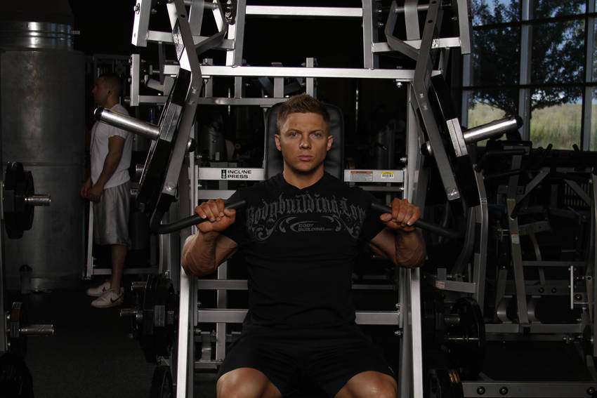
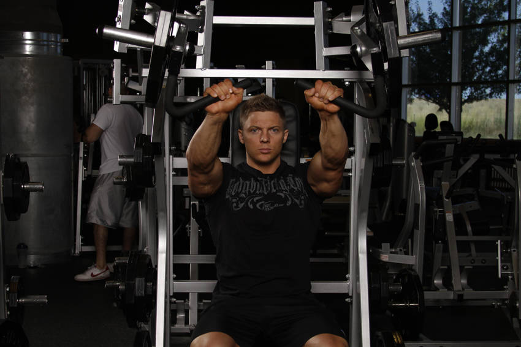
Start Handles level with upper chest, elbows back and below the wrists
End Arms nearly straight, pressed up and slightly in
01
Technogym Selection Pro · incline chest press
Technogym Chest Press — Selection 700 or 900
Seated, upright back pad, two independent lever arms with handles beside your chest, weight stack behind you. Most Technogym floors have no dedicated incline machine: use the standard chest press with the seat dropped to its lowest setting, which raises the handles relative to your chest and gives you the angle. Failing that, an adjustable bench at 30° with dumbbells in the Pure area.
Scan the QR on the machine console with the Technogym app for their own video of the movement.
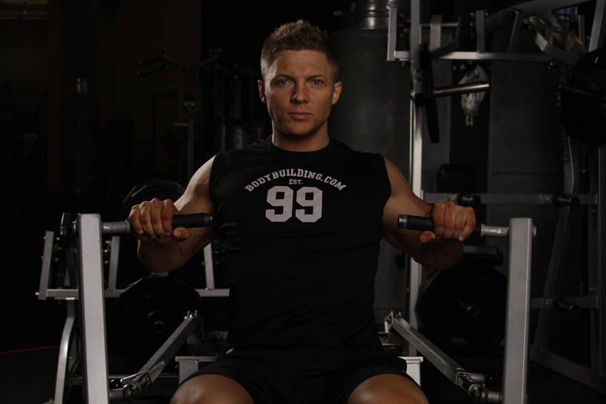
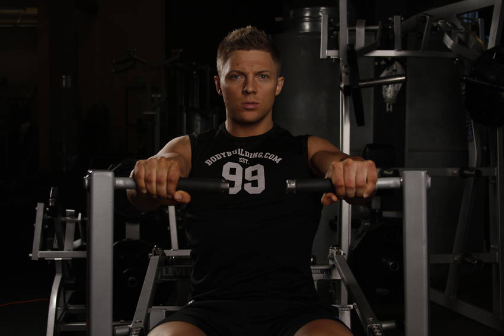
Start Handles at mid-chest, shoulder blades pinned back and down
End Arms extended forward, short of lockout
02
Technogym Selection Pro · chest press
Technogym Chest Press — the same machine as 01
Raise the seat so the handles line up with the middle of your chest. Same machine, one pin change, completely different emphasis. Do not go and queue for a second one.
Scan the QR on the machine console with the Technogym app for their own video of the movement.
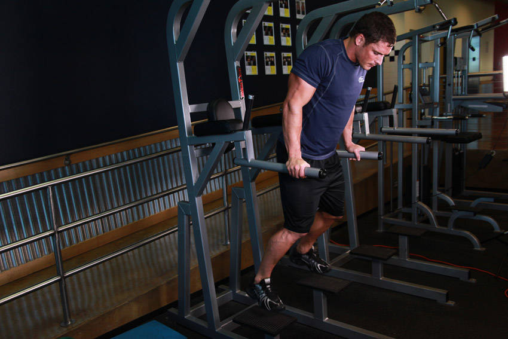
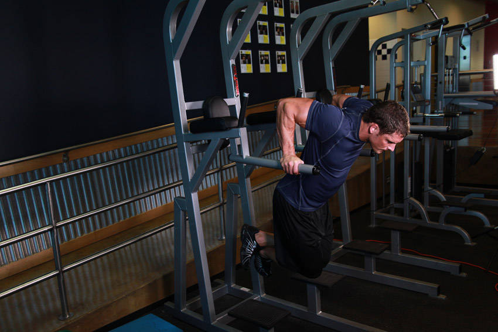
Start Arms straight on the bars, chest leaning forward over the hands
End Lowered until upper arms are parallel to the floor
03
Technogym Selection Pro · assisted chin/dip
Technogym Selection Assisted Chin / Dip
Tall frame, pull-up bar on top, dip bars at waist height, and a padded platform for your knees or feet. The stack takes weight off you rather than adding it, so a higher number is more help, not less — that is backwards from every other machine here and it catches everyone out once.
Scan the QR on the machine console with the Technogym app for their own video of the movement.
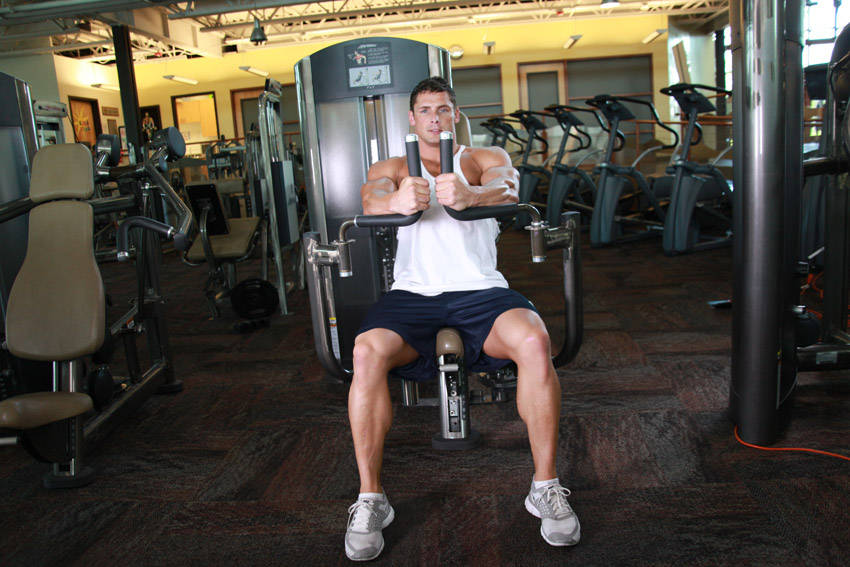
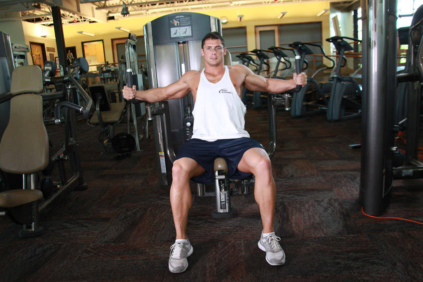
Start Arms wide, elbows soft and fixed at that angle
End Pads touching in front, squeezed for a full second
04
Technogym Selection Pro · pectoral machine (pec deck)
Technogym Pectoral Machine — often a combined Pectoral / Rear Delt
The giveaway is the arms: vertical pads you press with your forearms, not handles you push with your hands. If it has handles pointing forward you are at the chest press. If it is the combined pec/rear-delt version, the arms have to be swung round to the front position before you sit down.
Scan the QR on the machine console with the Technogym app for their own video of the movement.
General training guidance, not coaching. Sharp pain in the shoulder joint means stop, not push through.
The upper-chest day, and the light one. Higher reps, shorter rests, nothing heavy — it sits between two hard sessions and is not meant to beat you up. Upper chest is the part most people under-build and the part that fills a shirt out at the collarbone, so it gets a session rather than one exercise at the top of Monday. The crossover diagram was wrong and has been redrawn: carriages to the bottom for this one.
Start Handles level with upper chest, elbows back and below the wrists
End Arms nearly straight, pressed up and slightly in
01
Technogym Selection Pro · incline chest press
Technogym Chest Press — Selection 700 or 900
Seated, upright back pad, two independent lever arms with handles beside your chest, weight stack behind you. Most Technogym floors have no dedicated incline machine: use the standard chest press with the seat dropped to its lowest setting, which raises the handles relative to your chest and gives you the angle. Failing that, an adjustable bench at 30° with dumbbells in the Pure area.
Scan the QR on the machine console with the Technogym app for their own video of the movement.
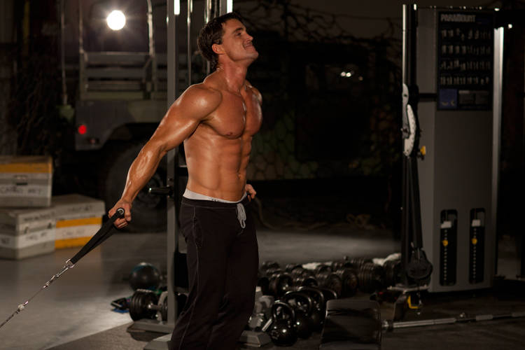
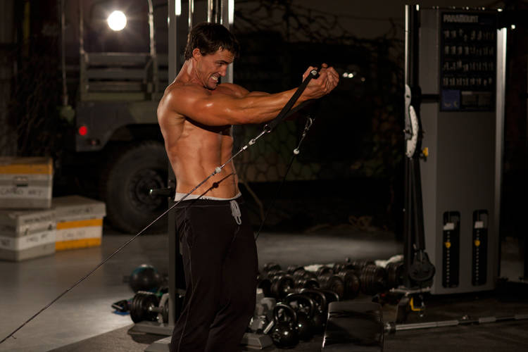
Start Pulleys at the bottom, arms down and out, one foot forward
End Hands together around collarbone height
02
Technogym Pure · dual adjustable pulley, both arms set low
Technogym Dual Adjustable Pulley, cable station, or Kinesis
Two tall uprights with a carriage that slides up and down and a D-handle on each cable. Slide both carriages to the bottom. If your gym has the wall-mounted Kinesis, that works too and the cables move more freely.
Scan the QR on the machine console with the Technogym app for their own video of the movement.
Start Arms wide, elbows soft and fixed at that angle
End Pads touching in front, squeezed for a full second
03
Technogym Selection Pro · pectoral machine (pec deck)
Technogym Pectoral Machine — often a combined Pectoral / Rear Delt
The giveaway is the arms: vertical pads you press with your forearms, not handles you push with your hands. If it has handles pointing forward you are at the chest press. If it is the combined pec/rear-delt version, the arms have to be swung round to the front position before you sit down.
Scan the QR on the machine console with the Technogym app for their own video of the movement.
Start Handles at mid-chest, shoulder blades pinned back and down
End Arms extended forward, short of lockout
04
Technogym Selection Pro · chest press
Technogym Chest Press — the same machine as 01
Raise the seat so the handles line up with the middle of your chest. Same machine, one pin change, completely different emphasis. Do not go and queue for a second one.
Scan the QR on the machine console with the Technogym app for their own video of the movement.
General training guidance, not coaching. Sharp pain in the shoulder joint means stop, not push through.
The lower-chest day, plus the pulling that keeps your shoulders where they belong. Dip first while you are fresh, then the crossover set high and swept down — those two are the only movements all week that hit the lower chest directly, and they used to run fifth and fourth, when you were spent. The last two are Vertical Traction and Low Row and they are not optional: press three times a week with no pulling and the shoulders roll forward, which hurts and eventually stops you pressing at all.
Start Arms straight on the bars, chest leaning forward over the hands
End Lowered until upper arms are parallel to the floor
01
Technogym Selection Pro · assisted chin/dip
Technogym Selection Assisted Chin / Dip
Tall frame, pull-up bar on top, dip bars at waist height, and a padded platform for your knees or feet. The stack takes weight off you rather than adding it, so a higher number is more help, not less — that is backwards from every other machine here and it catches everyone out once.
Scan the QR on the machine console with the Technogym app for their own video of the movement.
Start Handles at mid-chest, shoulder blades pinned back and down
End Arms extended forward, short of lockout
02
Technogym Selection Pro · chest press
Technogym Chest Press — the same machine as 01
Raise the seat so the handles line up with the middle of your chest. Same machine, one pin change, completely different emphasis. Do not go and queue for a second one.
Scan the QR on the machine console with the Technogym app for their own video of the movement.
Start Pulleys at the top, arms up and out, one foot forward
End Hands together in front of the hips
03
Technogym Pure · dual adjustable pulley, both arms set high
Technogym Dual Adjustable Pulley, cable station, or Kinesis
Two tall uprights with a carriage that slides up and down and a D-handle on each cable. Slide both carriages to the top. If your gym has the wall-mounted Kinesis, that works too and the cables move more freely.
Scan the QR on the machine console with the Technogym app for their own video of the movement.
Start Arms wide, elbows soft and fixed at that angle
End Pads touching in front, squeezed for a full second
04
Technogym Selection Pro · pectoral machine (pec deck)
Technogym Pectoral Machine — often a combined Pectoral / Rear Delt
The giveaway is the arms: vertical pads you press with your forearms, not handles you push with your hands. If it has handles pointing forward you are at the chest press. If it is the combined pec/rear-delt version, the arms have to be swung round to the front position before you sit down.
Scan the QR on the machine console with the Technogym app for their own video of the movement.
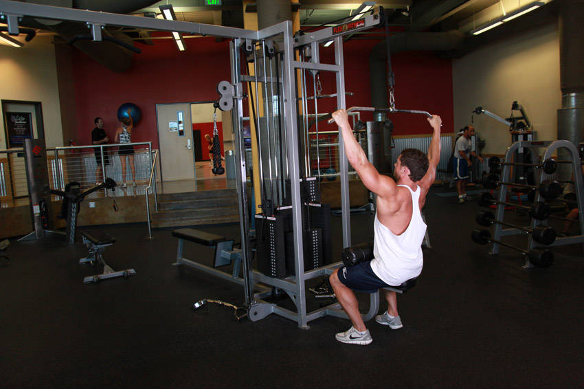
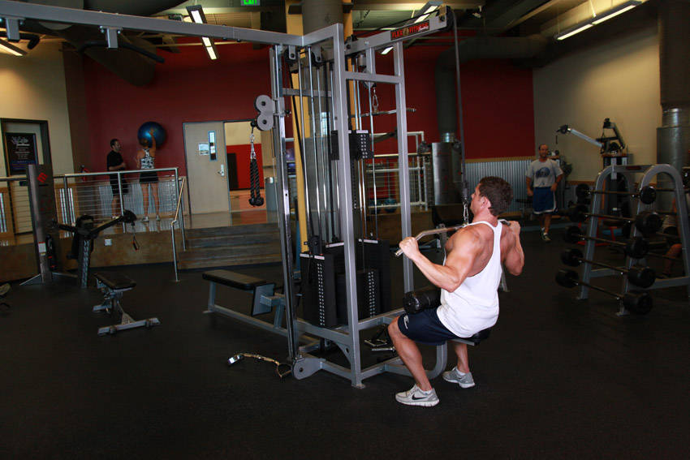
Start Arms overhead, shoulder blades lifted
End Bar at collarbone, elbows down by the ribs
05
Technogym Selection Vertical Traction — their lat pulldown
Seated, thigh pad clamped down, wide overhand grip.
Scan the QR on the machine console with the Technogym app for their own video of the movement.
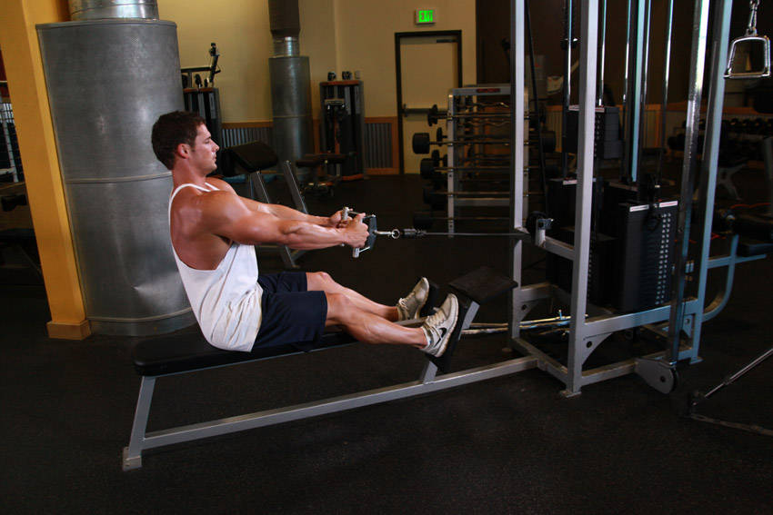
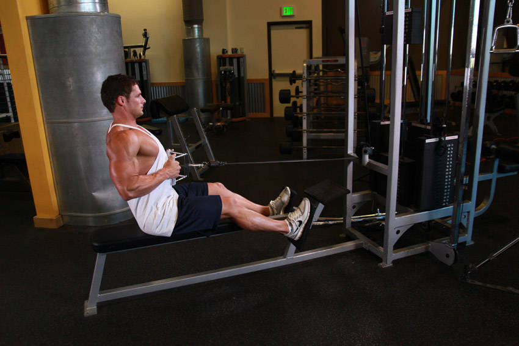
Start Arms extended, shoulder blades forward
End Handle at the ribs, blades squeezed back
06
Technogym Selection Low Row, or the seated cable row
Chest against the pad if there is one, feet braced.
Scan the QR on the machine console with the Technogym app for their own video of the movement.
General training guidance, not coaching. Sharp pain in the shoulder joint means stop, not push through.
Every set on the cable station. Five exercises, one machine, three attachments — you move the carriage up or down and swap rope for bar. Nothing to queue for and no walking between sets, which is most of why this fits in 40 minutes. The cable also holds tension where free weights lose it, at the top of a curl and the bottom of a pushdown, which is exactly where arms do their work.
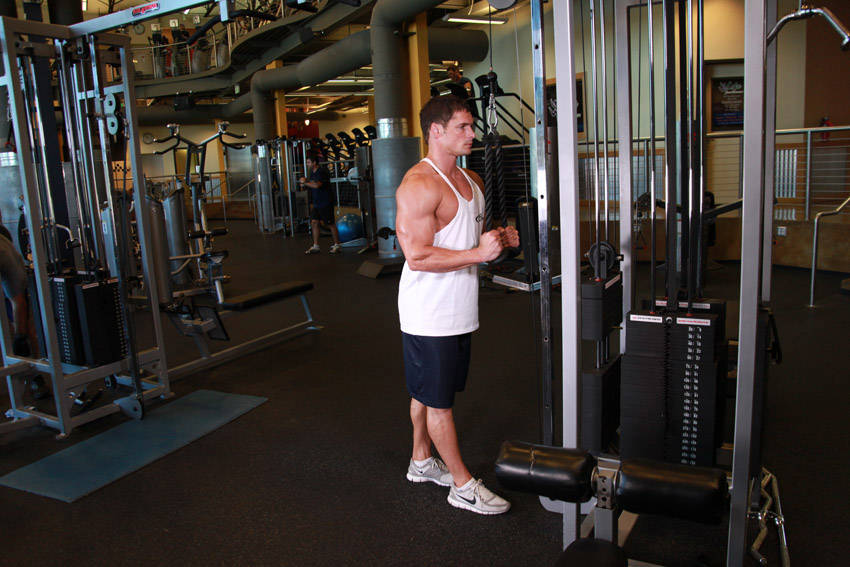
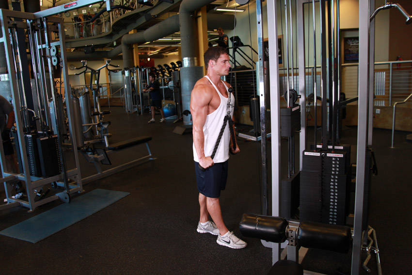
Start Rope at chest height, elbows tight to the ribs
End Arms straight, rope split apart at the thighs
01
Rope on the high pulley
Technogym Dual Adjustable Pulley · cable station. Rope attachment, carriage at the top. Elbows pinned to your ribs and kept there — the second they drift forward it becomes a shoulder movement.
Scan the QR on the machine console with the Technogym app for their own video of the movement.
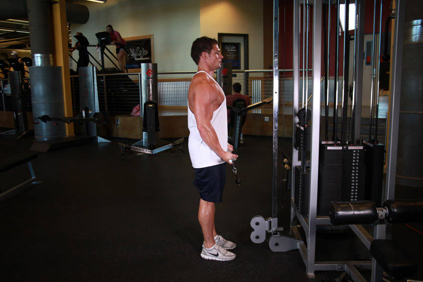
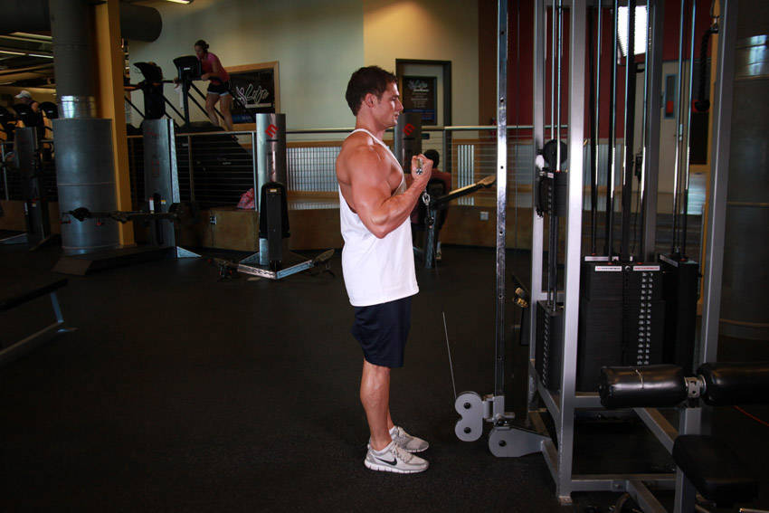
Start Arms down, cable already under tension
End Curled to shoulder height, elbows still at the sides
02
Straight or EZ bar on the low pulley
Technogym Dual Adjustable Pulley · cable station. Carriage all the way down, bar attachment. Stand a pace back from the column so there is tension on the cable before you even start.
Scan the QR on the machine console with the Technogym app for their own video of the movement.
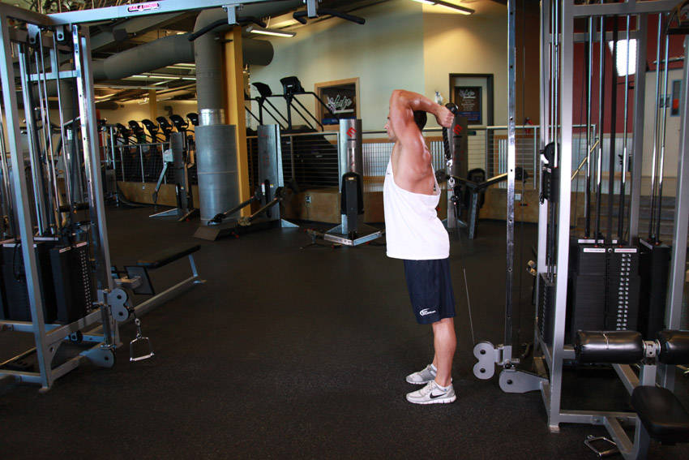
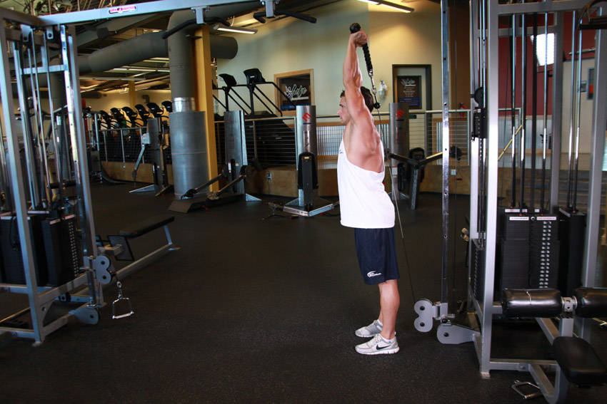
Start Rope behind the head, elbows bent and high
End Arms straight overhead, elbows still forward
03
Rope on the low pulley
Technogym Dual Adjustable Pulley · cable station. Face away from the machine, rope over your shoulders, elbows pointing forward at the ceiling.
Scan the QR on the machine console with the Technogym app for their own video of the movement.
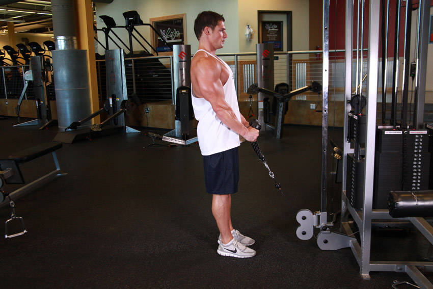
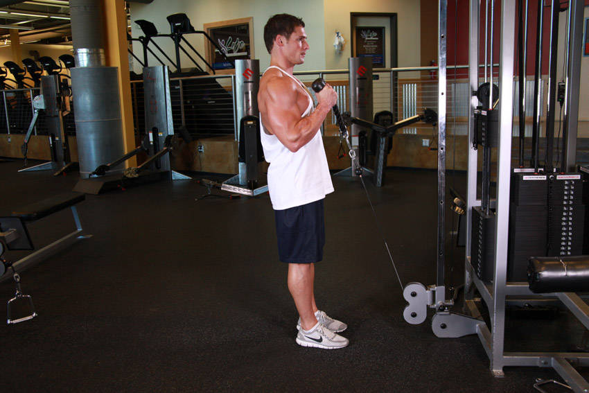
Start Arms down, palms facing each other
End Curled to the shoulders, palms still facing in
04
Rope on the low pulley
Technogym Dual Adjustable Pulley · cable station. Rope attachment, neutral grip, thumbs up the whole way and never rotating.
Scan the QR on the machine console with the Technogym app for their own video of the movement.
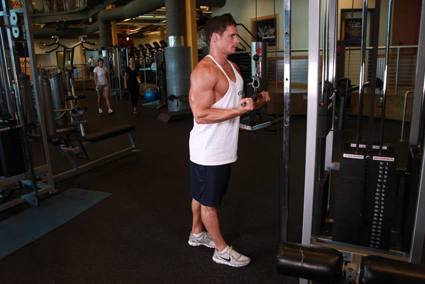
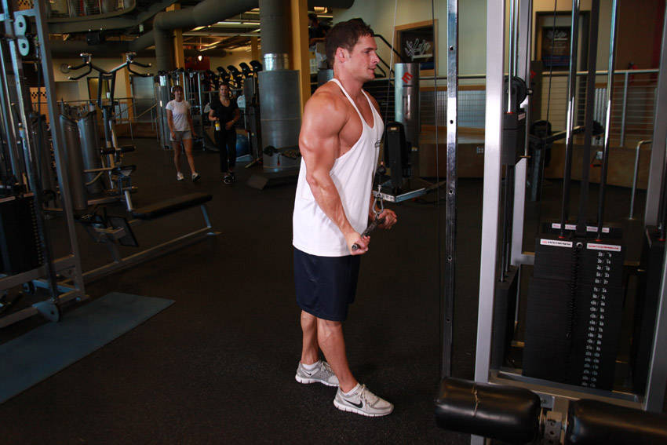
Start Bar at chest height, underhand grip
End Arms straight down, wrists neutral
05
Straight bar on the high pulley
Technogym Dual Adjustable Pulley · cable station. Same setup as 01 with an underhand grip on a straight bar. Two sets to finish, nothing heavy.
Scan the QR on the machine console with the Technogym app for their own video of the movement.
General training guidance, not coaching. Sharp pain in a joint means stop, not push through.
Four of these five are loaded and that is deliberate. Abs are muscle and they grow the same way everything else does — by getting harder over time. Endless bodyweight crunches stop working the moment you can do forty. Start with the hardest movement and finish braced against a cable that is trying to twist you.
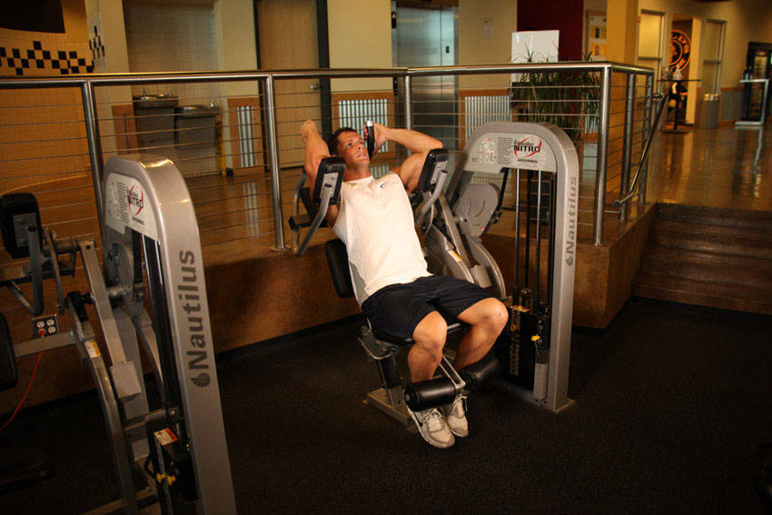
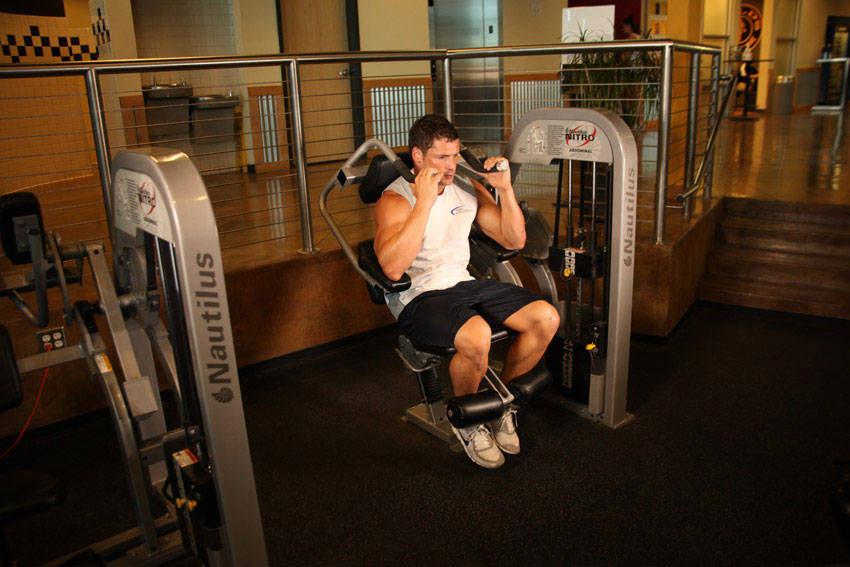
Start Upright, chest against the pad
End Crunched forward, ribs towards hips
01
Technogym Selection Abdominal Crunch
Seated, chest pad across the front, feet hooked. Loaded from a stack so you can measure progress.
Scan the QR on the machine console with the Technogym app for their own video of the movement.
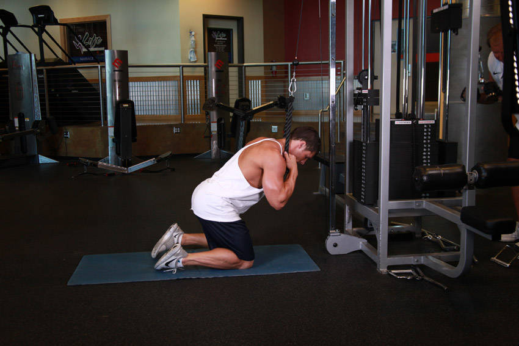
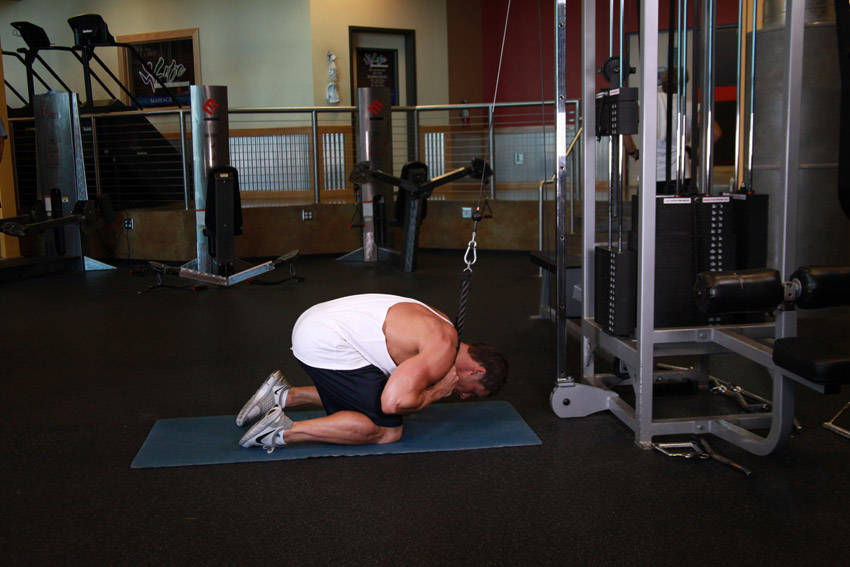
Start Kneeling tall, rope at the ears
End Elbows driven to the thighs, spine rounded
02
Technogym cable station, rope on the high pulley
Kneel facing the machine, rope beside your ears, hips fixed.
Scan the QR on the machine console with the Technogym app for their own video of the movement.
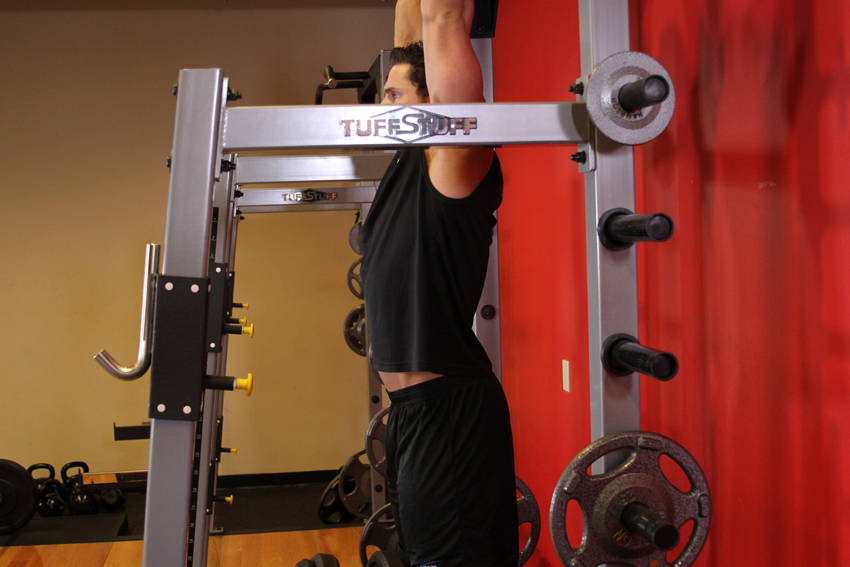
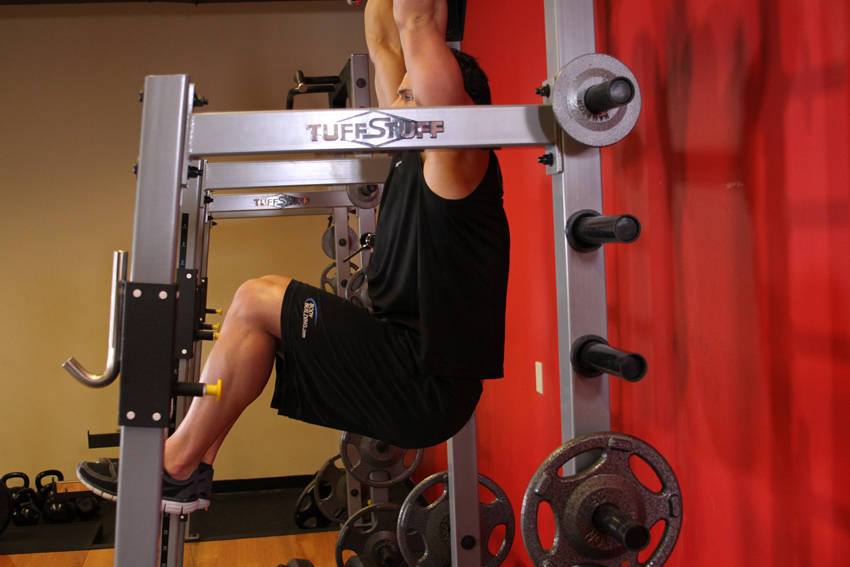
Start Hanging straight, shoulders packed down
End Knees up past the hips, pelvis curled under
03
Technogym Selection Assisted Chin / Dip, or a captain’s chair
Use the dip bars with your back against the pad, or hang from the bar above if your grip holds.
Scan the QR on the machine console with the Technogym app for their own video of the movement.
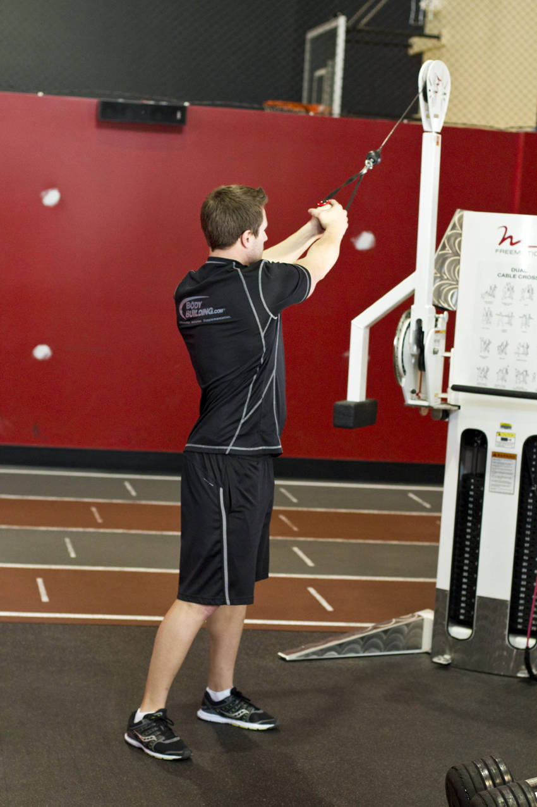
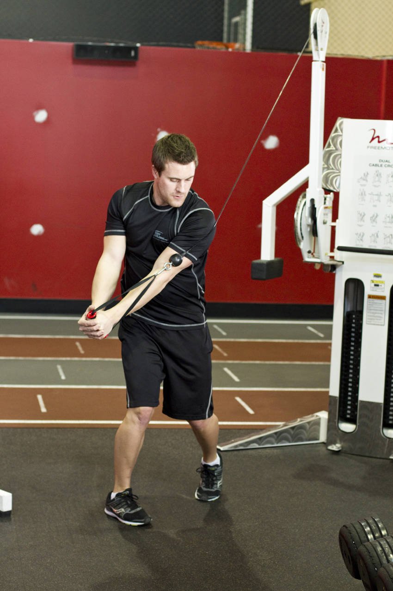
Start Handle high and across, arms extended
End Pulled down to the opposite hip, torso rotated
04
Technogym Dual Adjustable Pulley, handle set high
Pull down and across the body, rotating through the ribs and letting the back foot pivot.
Scan the QR on the machine console with the Technogym app for their own video of the movement.
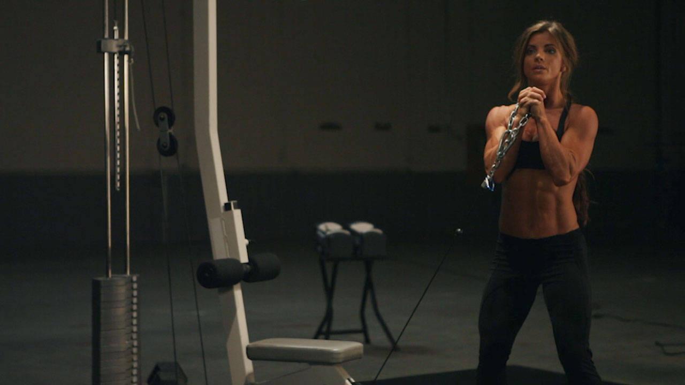
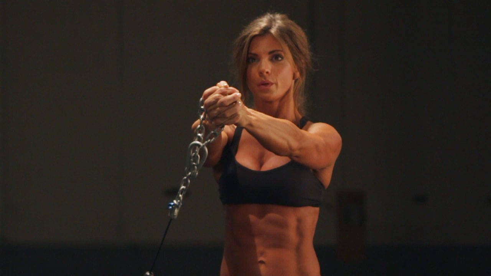
Start Handle at the chest, stood side-on to the machine
End Arms pressed straight out, torso refusing to rotate
05
Technogym Dual Adjustable Pulley · handle at chest height
Stand side-on to the column, feet shoulder width, handle clasped in both hands at the sternum. Step away until the cable is properly loaded.
Scan the QR on the machine console with the Technogym app for their own video of the movement.
General training guidance, not coaching. Sharp pain in a joint means stop, not push through.
Wide first, then narrow, then straight-arm. Three pulldown variations is not repetition — the grip changes which part of the lat does the work, and the straight-arm version is the only one your biceps cannot help with. Face pulls at the end are the insurance policy for every chest press you do the rest of the week.
Start Arms overhead, shoulder blades lifted
End Bar at collarbone, elbows down by the ribs
01
Technogym Selection Vertical Traction — their lat pulldown
Seated, thigh pad clamped down, wide overhand grip.
Scan the QR on the machine console with the Technogym app for their own video of the movement.
Start Arms extended, shoulder blades forward
End Handle at the ribs, blades squeezed back
02
Technogym Selection Low Row, or the seated cable row
Chest against the pad if there is one, feet braced.
Scan the QR on the machine console with the Technogym app for their own video of the movement.
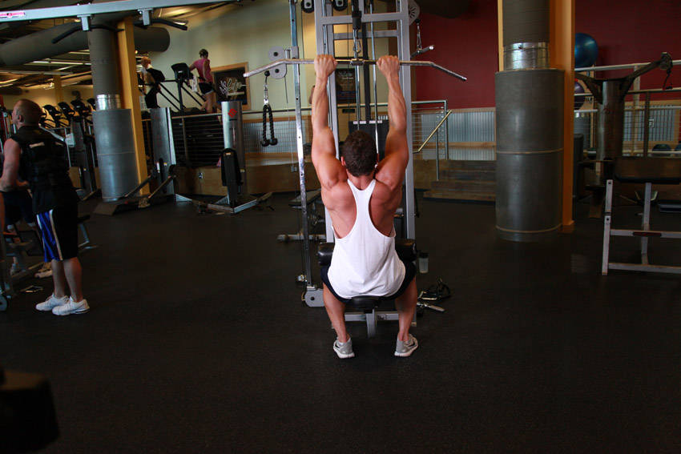
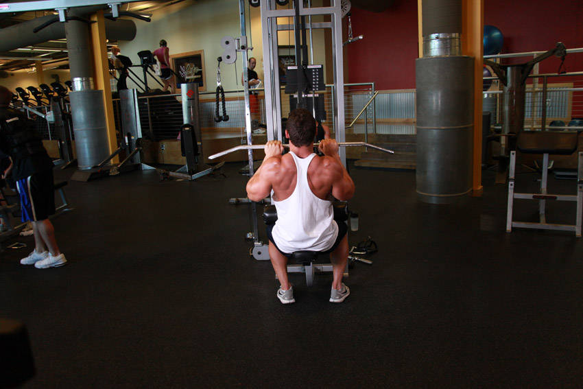
Start Arms overhead on the V-handle
End Handle at the upper chest, elbows down and back
03
Technogym Vertical Traction, V-handle
Same machine as 01 with a narrow V-handle instead of the wide bar.
Scan the QR on the machine console with the Technogym app for their own video of the movement.
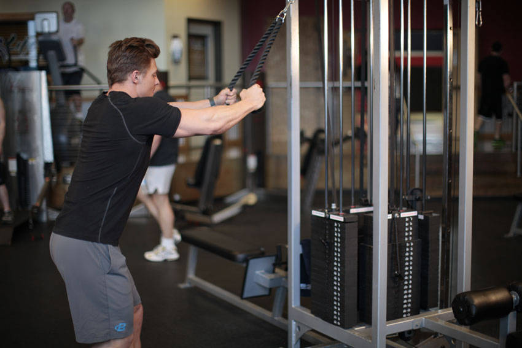
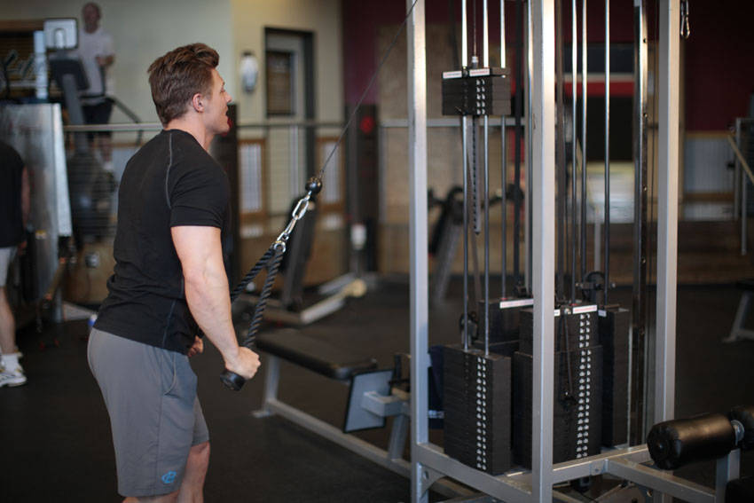
Start Rope at eye height, arms straight and forward
End Rope at the thighs, arms still straight
04
Rope on the high pulley · Technogym Dual Adjustable Pulley · cable station
Stand back from the column, rope at eye height, arms locked straight the whole set.
Scan the QR on the machine console with the Technogym app for their own video of the movement.
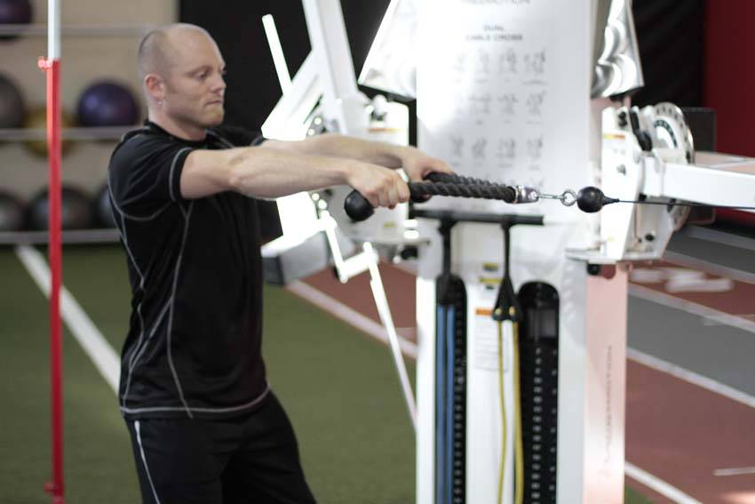
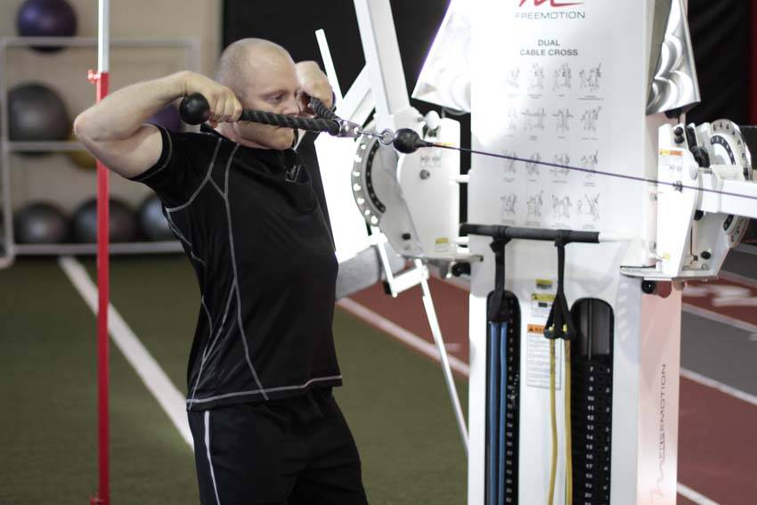
Start Rope at eye height, arms extended
End Hands beside the ears, elbows high and wide
05
Rope on the high pulley · Technogym Dual Adjustable Pulley · cable station
Rope just above eye height, pull towards your forehead with the elbows flaring high and wide.
Scan the QR on the machine console with the Technogym app for their own video of the movement.
General training guidance, not coaching. Sharp pain in a joint means stop, not push through.
One press, then four raises. The press is the only heavy movement here; everything after it is light and high-rep, because delts are small and respond to volume rather than load. Side delts get two exercises because they are what make shoulders look wide and a press barely touches them.
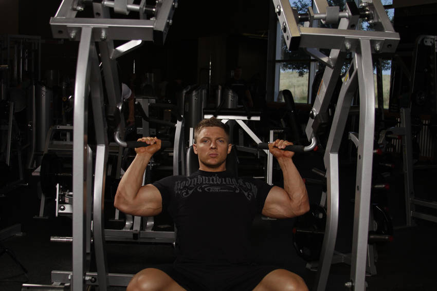
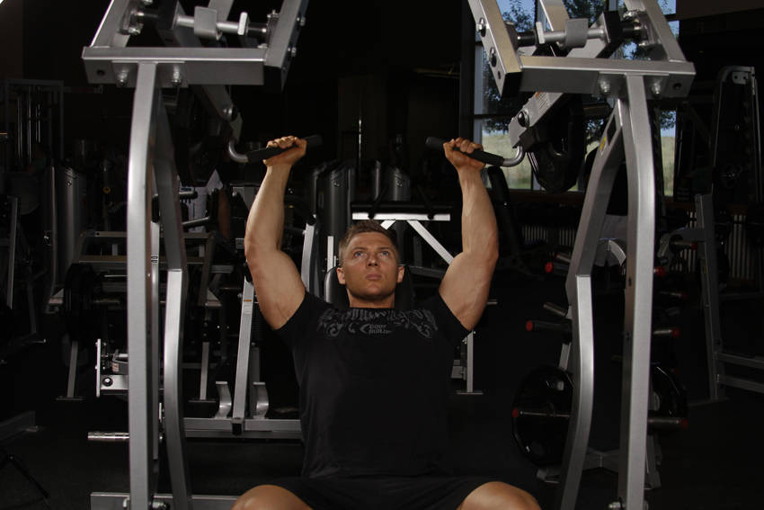
Start Handles at ear height, elbows under wrists
End Arms extended overhead, short of lockout
01
Technogym Selection Shoulder Press
Seated, back flat against the pad, handles starting at ear height.
Scan the QR on the machine console with the Technogym app for their own video of the movement.
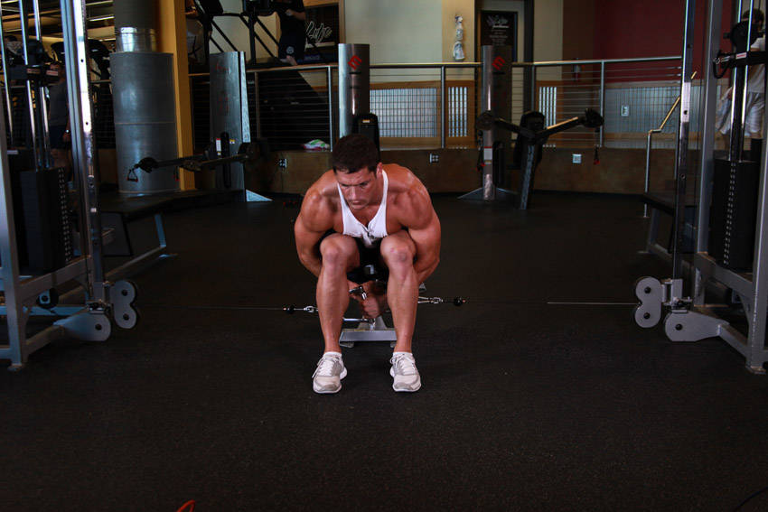
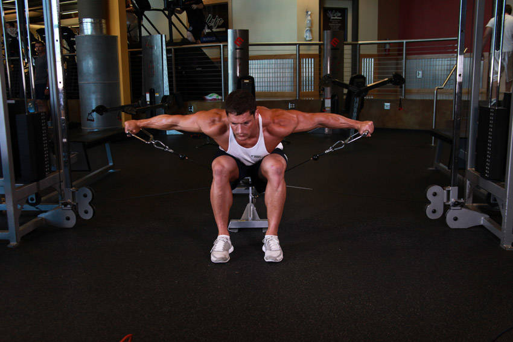
Start Arm down across the body, cable loaded
End Arm out to the side at shoulder height
02
Single handle on the low pulley · Technogym Dual Adjustable Pulley · cable station
Stand side-on, cable running across the front of your body, handle in the far hand.
Scan the QR on the machine console with the Technogym app for their own video of the movement.
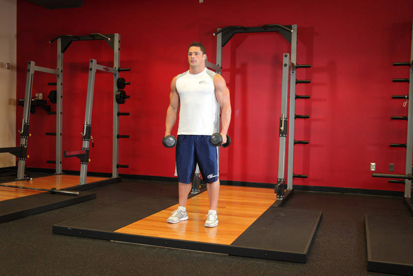
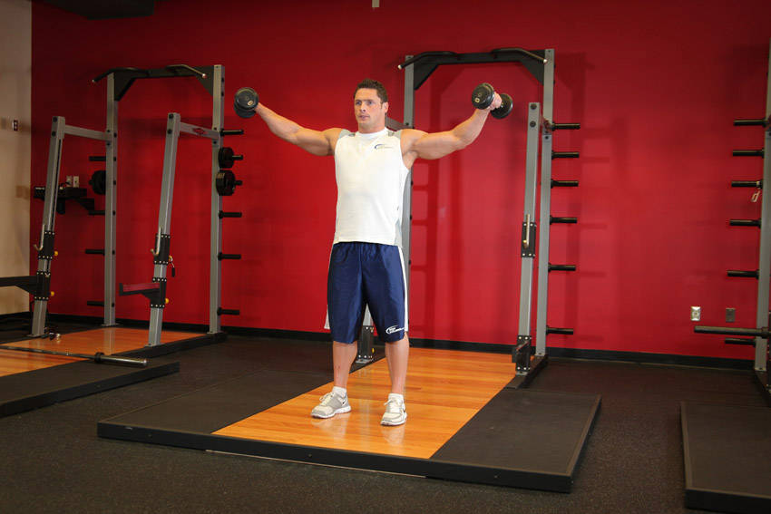
Start Dumbbells at the thighs, elbows soft
End Arms out to shoulder height, elbows still soft
03
Dumbbells · Technogym Pure rack
Both arms at once, very light, standing tall.
Scan the QR on the machine console with the Technogym app for their own video of the movement.
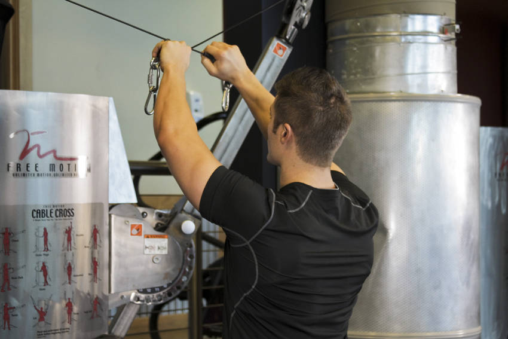
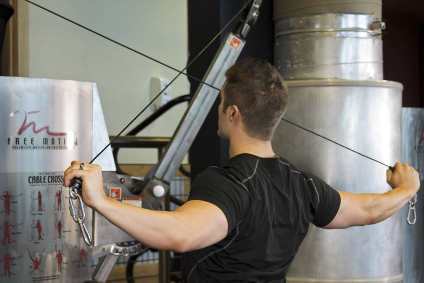
Start Arms crossed in front, cables under tension
End Arms swept wide and back, blades squeezed
04
Both handles, pulleys at shoulder height, cables crossed · Technogym Dual Adjustable Pulley · cable station
Stand in the middle, grab the opposite handle in each hand so the cables cross in front of you.
Scan the QR on the machine console with the Technogym app for their own video of the movement.
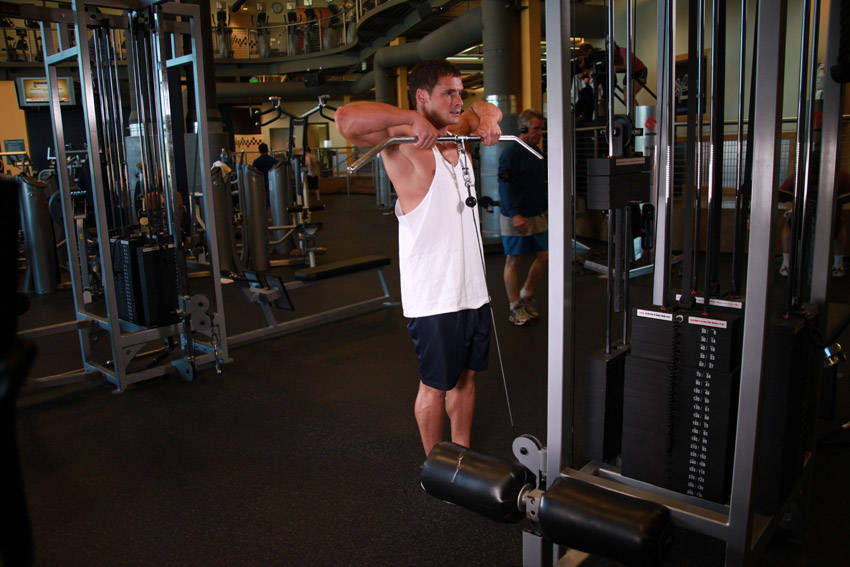
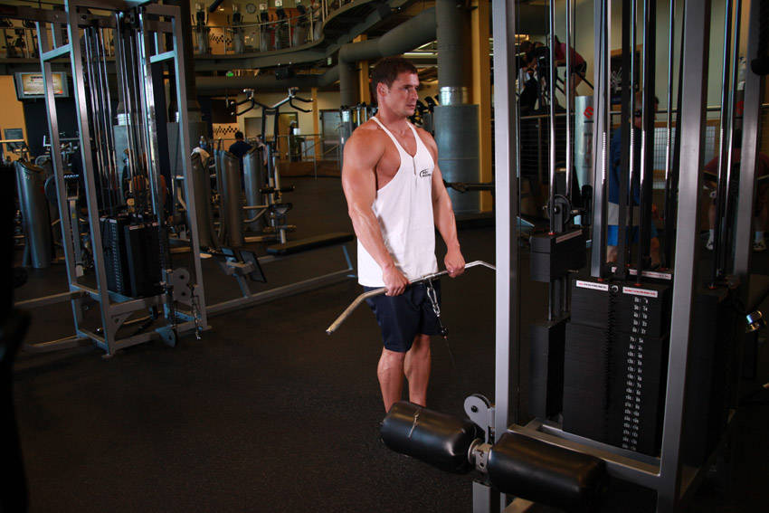
Start Bar at the thighs, arms straight
End Bar at chest height, elbows level with the shoulders
05
Straight bar on the low pulley · Technogym Dual Adjustable Pulley · cable station
Bar at thigh height, hands about shoulder width — not narrow.
Scan the QR on the machine console with the Technogym app for their own video of the movement.
General training guidance, not coaching. Sharp pain in a joint means stop, not push through.
60 minutes · nothing is baked, and the beef is dinner rather than a batch
60 minutes hands-on, down from 95, and the shortest Sunday this plan has had. Two reasons: neither snack is baked, and the beef is one dinner rather than a batch — two steaks, cooked and eaten tonight. So there is no oven ladder; the oven goes on once at 200 °C for a single tray and then off. The velveting sets the clock, because 40 minutes of bicarb and 30 of marinade are both waiting rather than working, and the chicken tray and the parfait jar fit inside that waiting. Method from @goosetheory05 on TikTok, used at its own 500 g scale.
Sliced thin against the grain. A generous teaspoon and a half of bicarb worked through, then 40 minutes in the fridge. This is the velveting, and it is the only step here that cannot be hurried.
Breast butterflied flat, sweet potato in 2 cm cubes, one tray. The oven is used once today and then switched off.
Pecans toasted dry and watched. Chopped, then oats and cinnamon stirred in and the lot into a jar — that is the whole sweet snack for the week. Bowl dressing shaken in a second jar: Dijon, honey, vinegar, oil.
Five minutes resting, then sliced. Four portions to the fridge, two to the freezer for Friday.
Rinse the bicarb off properly or it tastes of soap. Then cornflour, egg white, soy, white pepper and a spoon of oil through it. Thirty minutes.
Wings dried hard, tossed with lemon pepper and baking powder, back in the fridge raw; half of them into the freezer for Thursday and Saturday. Salmon into three 400 g lots, one of them frozen. Grinder meat and cheese bagged in three, Saturday's to the freezer.
Second dusting of dry cornflour, excess shaken off. Oil to 120–140 °C — cooler than you would guess. One batch is plenty at 500 g. Then capsicum, ginger, garlic, the sauce, and the whole bunch of spring onion through it. Rice on while you fry.
The bare minimum, if you only have half an hour. Bicarb the steaks and put the chicken tray in. Everything else here — the wing rub, the salmon split, the grinder bags, the parfait jar — is ten minutes of bagging that can happen any evening. Nothing this week needs a long cook, which is the trade for the beef not stretching past tonight.
The freezer carries this week — three of the four batch mains use it
Nothing cooked goes past three days in the fridge without being frozen, and with only four batch mains covering thirteen meals, three of them run past that. The wings are the important one: they are frozen raw, not cooked, so Thursday and Saturday are still fried from scratch.
Two portions, both eaten. There are no leftovers from a velveted stir-fry and there is no point pretending otherwise — the coating goes soft and the beef goes grey.
Half to the fridge for Monday and Tuesday. Half frozen raw, out Wednesday night and again Friday night. Raw chicken does not make day six in a fridge.
Monday and Wednesday to the fridge. Friday's frozen, out Thursday night. Buy it fresh and freeze it the same day, not on Wednesday.
Four portions to the fridge for Sunday and Wednesday. Two frozen, out Thursday night for Friday lunch. Apple and dressing are added on the day either way.
Tuesday and Thursday to the fridge, Saturday's bag to the freezer. Ham and salami both freeze fine; the salad is made fresh twice and never kept past two days.
Stays in its bags in the freezer all week. Five minutes from frozen, as you want it. This is the one thing here you cannot get wrong.
The bowl dressing and the nut-and-oat mix. Both outlast the week; neither needs remaking.
The rule underneath all of this: cooked dishes get eaten inside about three days or they get frozen, and anything frozen thaws in the fridge overnight rather than on the bench. The salmon is the one to watch — it is the only main here with no margin at all. For actual times and temperatures, Food Standards Australia New Zealand rather than a meal plan.
Sunday · one trip · nothing repeated
The beef is tonight only — your two steaks, and they are not on this list. That is the shape of the week: the Mongolian beef from @goosetheory05 is Sunday dinner and nothing else leans on it, so the four other mains carry the remaining thirteen meals. Four proteins and no fresh pork — chicken wings, chicken breast, salmon, and cured ham and salami. Velveting has never been in this plan before, and nor have wings, grinders, harvest bowls or edamame. No lentils, as always. The shop is $276.50, and $48.50 of that is pantry that lasts months — Shaoxing, white pepper, bicarb, cornflour, frying oil and two spice jars — so the recurring basket is nearer $228. Check the Dijon, mayonnaise, honey and soy before you leave: they are on the list because I cannot see your cupboard, and they are $17 of the total. The salmon at $42 is the one real splurge; 800 g instead of 1.2 kg saves $14 and costs you one dinner.
8–14 November · 41 lines · no fresh pork, no lentils
Olive oil, salt and pepper, baking powder, cinnamon, dried oregano, caster sugar, and red wine vinegar — three dishes use it this week, so check you have most of a bottle. And the two steaks, which is the whole reason there is no beef line above. No protein powder, no almond meal, no filo, no couscous.
Protein averages 123 g each a day — 116 at the bottom, 137 at the top. Every single day lands inside the 112–154 target, which is the second week running. Energy about 1550 kcal a day.
For next week’s plan
Anything you want changed, added or dropped. Write it as it occurs to you — mid-cook, in the aisle, after dinner — and it will be waiting when the next plan gets built.
Shells only — no logic yet
For meals outside the weekly plan — a birthday dinner, guests on the weekend. Kept separate so they never disturb the shop or the Sunday sequence.
To wire: store against a date, flag whether its ingredients merge into that week's shop or stay separate, surface it on the day it falls.
Photograph what's actually on the shelf, get back a recipe that uses it. Aimed at the Thursday problem — half a cabbage, three eggs, some rice, no idea.
Take a photo or drop an image
JPG / PNG · fridge shelf, bench, pantry
To wire: identify ingredients from the image, cross-check against what the plan says should still be in the fridge, rank by what expires soonest.
Page updated — · pull down to refresh